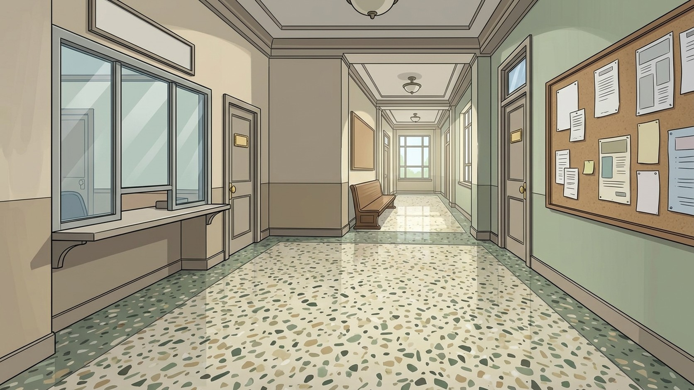
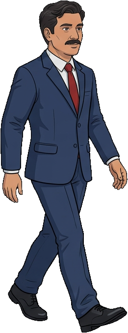

Starting out
The week of January 20 started in the kitchen. My dad, Gene, turned the television up for President Cunningham's inaugural address, and most of it was about the cost of healthcare. My mom, Ruth, said we would hear about every bill that mattered by spring, and Dad said he would believe it when the premiums came down. I had turned eighteen that fall and had never voted, so I listened to all of it.

On Monday, the 27th, I walked into City Hall and asked the clerk, Ms. Doss, what it took to run for the council. She slid a packet across the counter with a form, a fee schedule and the date filing opens, June 21. I read it twice on the steps outside and went home to ask Dad who in the neighborhood might sign my petition.
